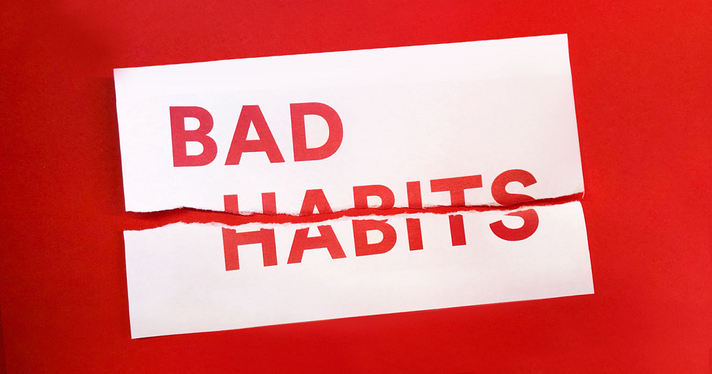

This Is content title
Wikis are enabled by wiki software, otherwise known as wiki engines. A wiki engine, being a form of a content management system, differs from other web-based systems such as blog software, in that the content is created without any defined owner or leader, and wikis have little inherent structure, allowing structure to emerge according to the needs of the users.[1] Wiki engines usually allow content to be written using a simplified markup language and sometimes edited with the help of a rich-text editor.[2] There are dozens of different wiki engines in use, both standalone and part of other software, such as bug tracking systems. Some wiki engines are open source, whereas others are proprietary. Some permit control over different functions (levels of access); for example, editing rights may permit changing, adding, or removing material. Others may permit access without enforcing access control. Other rules may be imposed to organize content.